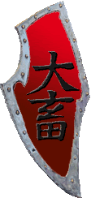

|

|
Das schwarze Brett
|
|
| Übersicht,
Geschichten (RPG) |
|
liebe liegt in der luft (6  ) )
|
| Soulwizzard Dowan (RIP) |
Den halben tag hatte sie im Keller eines Gasthauses verbracht, wo auch sonst, es gab ja keinen anderen Ort.
Jene, die sie zur Hochzeit Eingeladen hatten gaben nur zur Antwort das man in der Innenstadt bleiben können.
Innenstadt … Was für ein Wort dachte sie … da versteckte sie sich sonst nur wenn sie bei einem Feind war …
Sich selbst schimpfend Gedanken daran zu verschwenden, begab sie sich zum Vereinbarten Ort um Papa Lonestar etwas zu überreichen.
Dieser Ort brachte ihr Unbehagen, alles abgeriegelt, ständig nur Türme … ein Schauer lief ihr über den Rücken … Gefangene bei Leuten wo sie glaubte sicher zu sein … deprimiert begab sie sich zurück in den Keller des Gasthauses.
Wooti Sikaryan lag noch immer friedlich zusammen gerollt in den Fellen.
Unwillkürlich lächelte sie … einen solchen Schlaf … sie beneidete ihn dafür … setzte sich neben ihn.
Durch das Kellerfenster viel Licht in den Raum, kitzelte Wooti an der Nase, lies ihn wach werden.
Wie immer grummelte und murrte er … eher einem Zwerg statt einem Elfen gleich.
… Die Hochzeit stand kurz bevor … schnell noch das Kleid zu recht gerückt über der Rüstung, den Zweihänder geschickt unterm Mantel versteckt …
Die haare gekämmt …
Wooti im Arm haltend, betraten sie den Hochzeitssaal.
Einige Gesichter kannte sie, doch nicht jeden, so zog sie sich in eine hintere reihe zurück.
Wooti ´s benehmen bereitete ihr Unbehagen, lies sie wissen das er sich nicht benehmen würde.
Sie sollte recht behalten
Die Hochzeit verlief Planmäßig, sowohl die Braut als auch Bräutigam waren anwesend und viele andere, so vertiefte sie sich in ihre Gedanken.
der Anleger ist frei … die Burg nur minimal ausgebaut … Katapult bereit … Segel können gesetzt werden
Wooti´s Stimme riss sie aus ihren Gedanken “EINSPRUCH“ hörte sie ihn sagen.
Was hatte er nun wieder vor schoss es ihr durch den Kopf er wird doch wohl nicht ….
Zu spät, er hatte es getan, er hatte die Hochzeit gestört.
Peinlich berührt sank sie auf ihren Stuhl tiefer, hoffend das es schnell vorbei sein würde, doch Wooti gab sein bestes, nur um die Hochzeitsgesellschaft gegen sich zu haben … unter den Zwergen konnte man jemanden erkennen der seine Axt zog … ein Magier, so glaubte sie, machte sich bereit für einen Kampf … Minuten die wie eine Ewigkeit schienen, verstrichen bis sein Auftritt vorbei war.
Zum Glück aller ohne Handgreiflichkeiten.
… ohne nennenswerte Vorkommnisse konnte die Hochzeitszeremonie zu ende gebracht werden, doch ihr sah man offensichtlich an das sie verärgert war.
setz die Segel, lassen uns abreisen, wir werden erwartet, schnell
rief sie der Seefrau zu, während sie die letzten Sachen zusammen suchte und verstaute.
Noch immer erzürnt über Wooti, würdigte sie ihn keines Blickes, sah stur über die See bis der Anleger in Sicht war.
Kurze knappe Gespräche, mehr führte sie mit ihm nicht und auch nur des Angriffes wegen.
Ständig dachte sie an die Hochzeit, sein benehmen …. Zorn stieg in ihr auf … keine der beiden Armeen hielt ihrer Wut stand.
Die Burgbesatzung, nicht der rede wert sagte er … nicht der rede wert wiederholte sie in ihren Gedanken und lud das Katapult um erneut die Schmiede an zu greifen … bis nur noch eine Ruine stand.
Müde und des Wartens überdrüssig das ein Gegner kommen würde, zogen sie sich zurück.
Sie versuchte auf andere Gedanken zu kommen, doch ein leises Klimpern in ihrer Tasche,
erinnerte sie ständig daran was sie eigentlich angedacht hatte für den Abend.
Es wurde immer später, doch sie war nicht in der Lage ein Wort mit ihm zu wechseln.
Die Sterne standen hoch am Himmel, es wurde langsam zeit sich zur ruhe zu begeben …
Wooti schlenderte langsam, den Kopf gesenkt hinter ihr her schatz? … hörte sie ihn sagen …
was willst du? Der Abend war schon peinlich genug murrte sie ihn an
Etwas, was wie eine Entschuldigung klang kam über seine Lippen
Ich weis ... du bist sauer ... du willst dein Gesicht wahren ... ich verstehe dich und hatte eigentlich versprochen so was nicht mehr zu machen ... aber ... ach ich weis nicht ... es tut mir leid ... sehr sogar … aber ich weis nicht wie ich mich entschuldigen soll ... im klappe aufreißen bin ich gut ... aber im gutmachen weniger ...
Seine Worte klangen aufrichtig, er bedauerte es offensichtlich, doch einen Tag der voller liebe war, der so schön war, so zu zerstören.
Erneut klimperte es in ihrer Tasche, erinnerte sie wehmütig daran was dort drin war.
Wooti, noch immer, mehr oder weniger eine Entschuldigung stammelt verstand einfach nicht was sie ihm sagen wollte.
Es war nicht der richtige Zeitpunkt, die Stimmung absolut unangebracht, dennoch … sie fasste sich ein Herz.
Drehte sich kurz um … wühlte in ihrer Tasche … die linke Hand hinterm Rücken versteckt … mit der rechten hand ihm die Augen zu haltend … mit ihrer linken Hand seine linke Hand nimmt … ein leises klicken … die Plüschhandschellen schließen sich um sein linkes Handgelenk … die rechte Hand von seinen Augen nimmt … die Schlüssel aus dem Umhang holt und mit der rechten, freien Hand, lachend in die Luft hält.
Wooti schaut verdutzt
das nenne ich mal Bindung ... ähm … er bekommt zittrige knie, so scheint es
sind wir jetzt ein sträflingspaar?? ist das die Steigerung von Plünderpaar??
Offensichtlich ein missglückter Versuch zu witzeln, denkt sie sich und grinst ihn frech an.
Ein amüsantes Geplänkel, missglückte Versuche zu witzeln, doch sie lässt nicht locker, lässt die Handschellen geschlossen.
Offensichtlich versteht er nicht und langsam verliert sie die Geduld mit ihm, überlegt die Handschellen zu öffnen und einfach zu gehen.
wenn du nicht langsam zu Rande kommst und hier weiter rum stammelst überleg ich mir das noch spricht sie die geduld bei seinem ewigen Gestammel, verlierend.
also er holt tief Luft Soul, mein schatz, seine stimme versagt und der Rest geht in Gestammel unter.
bitte? ich versteh nicht ganz, du nuschelst so seltsam daher als hättest du grade die Zunge verschluckt leicht die geduld verlierend
Erneut holt er tief Luft, spricht diesmal langsam
Soul, mein schatz ... ich bitte dich hier. in der nähe einer brennenden schmiede meine Frau zu werden ... unser Verlobungsring soll dies Katapult hier sein und jede Ruine ein weitere Diamant der ihm noch mehr Glanz verleiht ...und er soll so stark glänzen wie meine liebe zu dir ... und daher frage ich dich ... willst du meine Frau werden ?
Herzhaft lachend dass er das Katapult zu ihr zerrt, nimmt sie es ihm ab. Tränen in den Augen vor lachen
Ihre Antwort nicht abwarten spricht er
wenn ja so schieße auf den Turm
wenn nein schieße auf mich
bei vielleicht schieß ins Wasser
wäre meine antwort nein, täte ich dir das Katapult an den kopf werfen aber sicherlich nicht die teure Ladung vergeuden, wäre meine antwort Vielleicht täte ich dich ignorieren, die Handschellen öffnen und ins bett gehen, da ich aber stehen bleibe, das Katapult habe sie öffnet die Handschellen während sie spricht kannst du dir die antwort selber geben
Liebevoll und innig küssend lassen sie sich ins Gras sinken
Soulwizzard Dowan
Zur 8. Stunde am 83.Blumenmond im Jahre 420 |
24.05.05 10:55
|
|
Alessa Imret Eilistraee
  |
So leise sie konnte pirschte sie sich an den Stadtmauern entlang zu Soul, die, an einen Baum gelehnt, völlig in ein Schreiben vertieft zu sein schien. Doch als Alessa plötzlich, unachtsam der Vorfreude, den verdorrten Zweig übersah, den sie noch im selben Moment zertrat, fuhr Soul herum, blickte Less an und begann herzlich zu lachen.
Alessa rollte mit den Augen und schüttelte den Kopf über ihre Unachtsamkeit, hatte sie es damit mal wieder geschafft sich selbst zu verraten und die Vorfreude auf das Wiedersehen vorzeitig zu Nichte zu machen.
Soul reichte ihr den Zettel herüber, den sie soeben noch beschrieb "Da macht man sich so viel Mühe und dann tauchst du hier einfach so auf" entgegnete sie zwinkernd. Alessa griff nach dem Brief, setzte sich zu ihr in den spärlichen Schatten der kargen Bäume und begann zu lesen, während Soul einen Schluck von ihrem Wein nahm und daraufhin den Kopf leicht zurück lehnte.
Gespannt überflog Alessa die Zeilen.
"Verlobt?" Entfuhr es ihr mit großer Freude. Soul nickte nur grinsend. Less lachte laut auf und hob die Hand an die Stirn "Deswegen das sperrige Kata neben meiner Stadt" Souls Grinsen wurde etwas breiter und wieder nur ein stummes Nicken. Less bestürmte sie mit einer wilden und innigen Umarmung um dann zu bemerken "Genug Zeit hat sich Wooti ja schließlich gelassen! Ich freue mich unglaublich für euch Beide, ihr gehört so fest zusammen wie kein zweites Paar"
Freifrau Alessa Imret Greenleaf,
Vorsteherin von Delmah d´ yah,
Stern der vier Winde,
Ehefrau des ehrenwerten VitaminC
Zur 19. Stunde am 83.Blumenmond im Jahre 420 |
24.05.05 13:30
|
|
| Wooti Sikaryan (RIP) |
Der morgen begann wie jeden Tag , die Sonne geht auf, die Vögel starteten ihren nervigen Gesang und Blumenduft machte sich breit und das auch noch in allen Variationen. Wooti war schlecht von dem ganzen Frohsinn, von dieser wunderschönen Welt. Doch dann blickte er neben sich, sich fragend ob er nicht doch ein Teil dieser Welt geworden, ob er nun eigentlich auch das , was er doch so verabscheute.
Er sah sie, ja die eine, die die er liebte und der er gestern unter schwersten Anstrenungen die Treue geschworen. Kurz fragte er sich warum, dann über sich selbst lachend da er die Antwort doch genau wusste. Er liebte sie, von ganzem Herzen, Schrecken fuhr kurz in ihm auf als er Verstand, er war ein Teil dieser Welt... dieser Welt voll Liebe Frohsinn und Lebensfreude. Kurz schüttelte er sich, sich noch einen Augenblick gegen diesen Gedanken wehrend, dann aber , als er ihr schlafendes Gesicht sieht, ihn akzeptierend. Aktzeptierend ? Nein er mochte ihn sogar.
Nichts destotrotz hatte er ihr gesagt das jede ruine ein Diamant auf ihrem Ring sein soll , auf ihrem Ring, ... der Ring ... AHHHHHHHHHHHH DER RING !!! *ging ihm durch den Kopf* Leise über seine Dummheit murmelnd erhob er sich und bereitete das Frühstück... Es gab Gras .. mit etwas Erde ... mmmmhhhh lecker Gras... mit feiner knirschender Erde ... wie jeden Tag im Feld wenn er wiedereinmal vergas den Proviantkorb mitzunehmen ... Er mochte sich nicht ... nochweniger als er das Gras sah ... mit der Erde ... das leckere saftige Gras ... mit der knirschenden braunen Erde...
Was bin ich nur für ein fürsorgender Ehemann sprach er leise ... aber noch bin ich kein Ehemann fuher er leicht Triumphierend fort. Ich werde mich ändern ... ich werde für mich für sie ändern ... von heute an ... NIE WIEDER GRAS !!! ja ... nie wieder Gras ... mit Erde ... lecker saftiges grünes Gras ... mit lustig knirschender brauner Erde .....
Ihr Plan für heute war klar ... hin drauf und wieder einen Diamanten mehr, der hellstrahlend ihre Liebe repräsentieren sollte .... Also aufgestanden und losgelegt ... aber vorher noch Gras ... mit Erde .... DIESES ECKLIGE GRAS MIT DIESER BLÖDEN ERDE !!!
Dann weckte er sie sanft und gab ihr .. na ihr wisst schon ... das Gras mit Erde ... grinsend nahm und ass sie mit wonne ... er mit .. ach egal ...
Dann ein Kuss ... die Erde kratzte an den Lippen ... dennoch war der Kuss sanft und angenehm ... lebenfüllend ...
MORGENWÄSCHE rief sie kichernd als sie zum Fluss rannte und ihre Kleider ablegte ...
Ich komme gleeeiiiiich rief er ihr mit verstellter Stimme nach... in sich grinsend ... dann folgte er ihr ... waschen ... und ....
Einige Stunden später begaben sie sich bekleidet zum Hafen ... auf ins Schiff und hoch in den kalten norden... ihre Liebe würde ihn wärmen ... das war ihm klar ... also nichts mit dickem Mantel ... nur ihre Liebe ...
Nach einigen Stunden und ettlichen Breitengraden weiter nördlich wurde ihm schnell und klappernd klar das Liebe doch nicht soooo warm ist ... fürs Herz schon ... aber der Rest friert ... langsam wurde er blau ...
Dann endlich der Anleger ...
Wer als erster bei der Pumpe ist brauch heute abend nicht Spüüüüülen ... grinst sie ihn an und rennt los ... spülen ?? welch angenehme sache .... warmes Wasser ... kkkkkkaaaaaaallllltttt .....
An der Pumpe angekommen holte er schnell ein paar Fliegen ... daraufhin sorgt sie für den nächsten Diamanten ... er leuchtet hell ... ihre Liebe muss stark sein ...
schnell zurück ... und an ihr wärmen ... kaum gedacht getan ... wie er sie liebte ... doch nur kurz nach der Küste ein knacken ... der Seemann dreht um ... Eisberg ... kaaaaaaaaaaalt ...
doch morgen gibt es Schnee ... lecker Schnee ... ich hasse meine Speisekarte ....
Sir Wooti Sikaryan
Zur 11. Stunde am 89.Blumenmond im Jahre 420 |
25.05.05 21:15
|
|
| Soulwizzard Dowan (RIP) |
Einige Tage waren ins Land gegangen, bei ihrem Feind, Isbab von Luis Silva , stand kaum noch ein Stein auf dem anderen.
Die 40 Elfenkrieger waren erfolgreich besiegt worden, die Pumpe zerstört ... nur noch zwei Erzminen und zwei Goldminen standen
So reisten sie ab ... verabschieden ... darin war sie noch nie gut gewesen.
Still und heimlich hatten sie sich davongestohlen, tags zuvor Legolas gesagt, dass sie abreisen, nicht aber wann.
Sie erreichten die Heimat ... Abschied ... sie hasste diesen ... doch Wootis Weg führte woanders hin als ihrer ...
Einsam verbrachte sie die Tage, als eine Schreckensnachricht sie erreichte.
Gil de Demandolx ... Loriel de Demandolx ... tot ... wer, wieso, warum ...
Sie konnte keinen rechten Gedanken mehr fassen.
Alexius
ging es ihr durch den Kopf.
Wie würde er wohl die Botschaft auffassen.
Langsam aber sicher nahm wieder alles seinen Lauf ... Wooti war heimgekehrt ... sie konnte ihn wieder in die Arme schliessen ... wenn ...
ja wenn da nicht dieser vermaledeite Streit wäre,
der ihr den Schlaf raubte.
Streit mit Aracúron en Linyenwa.
Seit Tagen schon schien es, als sei er aggressiv und auf Streit aus.
Was fällt ihm ein Pheron wieder ins Air eingliedern zu wollen ... die Stadt gehörte rechtmässig Gil de Demandolx ... Stadtraub wirft man ihr vor, seit sie das Aranarth in Rodyn
verlassen hat ... blinder dummer Narr ... klebt an den Lippen eines Urvaners der schon damals viel falsch gemacht hat
Hass stieg in ihr auf, Hass auf den
Baron Aracúron en Linyenwa ...
Für dumm wollte er sie verkaufen im letzten gespräch...
Es reicht ... du hast den Bogen der Freundschaft überspannt, zum Reißen gebracht
ging es ihr durch den Kopf
Aracúron en Linyenwa, ich werde dich Besuchen, auf eine Art die dir nicht gefallen wird. Ich verspreche dir, ich werde dich aufsuchen.
Wärend sie sich umdrehte um zu gehen, hörte sie Aracúron en Linyenwa nur noch im Hintergrund sagen
Ich lass mir nicht von dir drohen, rede sachlich mit mir oder halts Maul
Kurz stockte sie, blieb stehen, sprach ohne sich um zu drehen
Ich drohe nicht Aracúron en Linyenwa, ich verspreche!
Auf ihrem Weg in die Heimat gingen ihr einige Gedanken durch den Kopf
Wieso treffe ich noch immer auf Scherbenwesen, die nicht wahrhaben wollen, dass ich mich geändert habe ... wieso wollen manche auf die harte Weise lernen ... wieso brauchen manche immer Beweise ...
Über das Gespräch nachdenkend erreichte sie die Heimat ... schloss Wooti in ihre Arme, erzählte ihm was vorgefallen war.
Es war beschlossene Sache, sie würden Aracúron en Linyenwa aufsuchen.
...der Morgen brach an ... ein Bote ...
Gil de demandolx und Loriel de Demandolx leben
Leben? Aber ich stand doch an deren Grab, legte eine Blume nieder. Sie sind tot, wie können sie Leben. Gaia hat noch nie jemanden Gnade gewährt nachdem dieser bereits im Totenreich war. Wer oder was ist hier am Werk?
Schnell zog sie sich ihre Rüstung an, ließ das Frühstück aus, legte Wooti einen Zettel hin und eilte los ...
Den ganzen Tag hatte sie mit Vorbereitungen verbracht ... unruhig ging sie schlafen ... wissentlich am nächsten Tag Segel zu setzen nach Tol in Mar.
Land in Sicht
Tol in Mar ... nun musste es schnell gehen ... niemand durfte merken das sie da waren ... Gaias Tempel ... vorsichtig und leise schlichen sie über Tol in Mar ... sie legte ihre Plünderkarawane ... spionierte Gebäude aus ... lachte innerlich darüber ...
Wie erwartet verlief der Abend ... Wooti war erfolgreich ... sie brachte die erbeutete Ware in die Stadt von Aracúron en Linyenwa.
das perfekte Team
ging es ihr durch den Kopf während sie Wooti im Arm hielt und ausrechnete, wieviel Schaden sie wieder einmal gemacht hatten.
Soulwizzard Dowan,
Verlobte des ehrenwerten Wooti Sikaryan
Zur 7. Stunde am 36.Erntemond im Jahre 420 |
03.06.05 11:59
|
|
| Wooti Sikaryan (RIP) |
der morgen kam ... schnell und heftig ... mit regen ... er mochte den regen ... er gab ihm die kraft ... das wissen das irgendwann alles weggespühlt ... das alles gleich vor dem regen ... den er fällt auf alle gleich .. ob sie nun unter einem dach oder einem baum ... der regen macht keine aussnahme ... genau wie sie es taten ... keine ausnahmen ... noch schnell das holz auf die elfanten gebunden ... auch auf sie fiel der regen ... er wusch sie ... sehr gut ... freute sich wooti ... bei dir auch nich unangebracht ... warf soul ein ...
sie hatte recht ... das wasser das auf ihn fiel, hatte sich rot gefärbt, bevor es den boden berührte ... bevor es zurück zu gaia ging ... der regen fällt auf alle ... doch nicht jeder sieht ihn gleich ... schoss ihm in den kopf ...
er erhob das haupt ... schaute in den himmel ... in den regen ... das wasser ... eine wohltat ... soul beobachtete ihn ... sah ihn an ... genoss seinen anblick ... das schwert zog er aus der scheide ... auch dieses färbte den regen rot ... das wasser verwischt alles ...
es verwischt alles ... wirklich alles ... getern noch ward jenes blut in kröpern gewesen ... warm ... pulsierend ... nun klebte es an seiner rüstung ... am schwert ... und der regen wusch es weg ... ebenso die spuhren des harten kampfes ... sie hatten sich gewehrt ... sie hatten ihn nicht erkannt ... er musste sie töten ... soul wusste nichts von seinen zweifeln ... dann sah er ihre wut ... ihre euphorie ... sie war wie er ... wenn er nicht zweifelte ... acuh wenn sie sonst komplett anders war ... im kampfe war sie wie er ...
er genoss weiter den regen ... das kühle nass ... dann ein knacken durchzieht den wald ... soul horcht auf ... dann huscht sie in den wald ... schneller als seine augen ihr folgen können ist sie weg ... ein pfiff ... dann der zweite ... wooti wusste bescheit ... sofort kampfbereit ... sie ebenso ... eine lichtung ... er pfiff ... abbruch ... kein guter ort zum kämpfen ...
lautlos folgten sie beide ... und wieder diese elendige ruhe ... die ruhe vor dem schrei ... der schrei der den beginn einer reise bedeutete ... den beginn und das ende ... das ende des daseins auf dieser scherbe ...
ein gasthaus ... ideal ... soul pfiff ... wooti pirschte zum hintereingang ... soul von vorn ... ideal ... drei pfiffe und schon stürzten sie los ...
der magier hatte keine chance sich zu wehren ... von allen seiten prassten die schwerter auf ihn ein ... nun kommt der schrei ... wooti stoppte ab ... dafür musste er gaia besuchen ... soul vollendete den streich ...da war der schrei ... dann wieder ruhe ...
eine leiche ... drei gingen rein zwei kommen raus ... tot ... stille ... das heulen des weibes ... wieder in den regen ... und wieder wäscht er die spuren weg ... wieder ist er rot, der regen ... ob er jemals farblos von ihm und ihr abprallen würde ... jemals farblos den boden berühren würde nachdem er über ihre leiber strich ??? ....
wieder ruhe ... elende ruhe ... die beiden kehrten zurück zum lager ... wärme ... im kalten regen ... zwei körper im liebestanz ...
wärme im kalten geschäft das ihren tag beherrschte ... doch sie mussten weiter ... keine zeit für wärme ... kein zeit noch länger zu tanzen ... keine zeit um dem leben eine chance zu geben ... sie brachten nur tot ...
segel gesetzt ... der plan war bekannt ... noch einen freund abgeholt .. und dann ... wieder ein diamant ... ein besonders teurer ... wieder erstrahlt ihre liebe noch heller ... wie er ihrs geschworen ... ein zärthlicher kuss ... dann fällt die pumpe in sich zusammen ... die asche wirft ein wunderschönes bild ... er leuchtet hell ... sehr hell ... der diamant ...
abreise ... glücklich ... arbeit getan und nachhause ... wärme ... wieder der tanz ... der tanz der leben bringen soll aber nur den tot für morgen vorbereitet ... den weg ebnet ... aus der wärme in die kälte ... hinein is kalte geschäft das ihr leben bestimmt ... doch sie waren zu zweit ... liebe ...
ja ... ein perfektes team ...
Sir Wooti Sikaryan,
Verlobter der reizenden Soulwizzard Dowan
Zur 15. Stunde am 37.Erntemond im Jahre 420 |
03.06.05 19:23
|
|
Übersicht,
Geschichten (RPG)
|
|
|
|